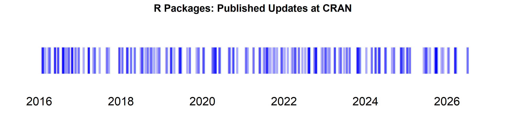
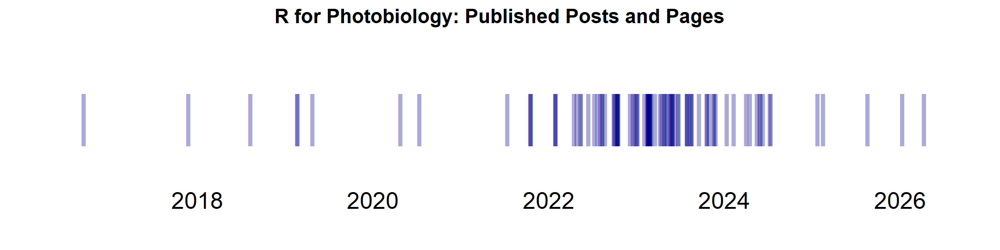
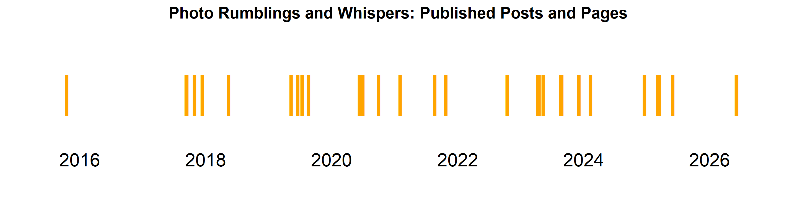

IDE/GUI’s I like
WinEdt (for \(\LaTeX\), \(\TeX\), with embedded R code or not), RStudio (for R scripts, Quarto and Rmarkdown), GitKraken (for git).
Elsewhere
ORCID profile:  https://orcid.org/0000-0003-3385-972X
https://orcid.org/0000-0003-3385-972X
Web site for the book Learn R: As a Language.
R Packages
The sources of the R packages I have published are in public Git repositories at GitHub. Out of the packages that I have authored and maintain, 15 are currently available through CRAN. The total number of package submissions (mostly updates) as author and maintainer is 244 since 2016-01-29.
I have published in CRAN one package update roughly every 15 days, or about 1.95 package updates per month, since 2016-01-29.
The most recent of these updates was published in CRAN on 2026-03-23.

plot of chunk cran-packages-plot
📂 Click to expand a list of my packages at CRAN with the most recently updated one at the top.
| R package | Title | Version | Date |
|---|---|---|---|
| ggpmisc | Miscellaneous Extensions to ‘ggplot2’ | 0.7.0 | 2026-03-23 06:40:02 UTC |
| ggspectra | Extensions to ‘ggplot2’ for Radiation Spectra | 0.4.0 | 2026-03-17 22:50:03 UTC |
| photobiology | Photobiological Calculations | 0.14.2 | 2026-03-15 06:10:19 UTC |
| photobiologyInOut | Read Spectral and Logged Data from Foreign Files | 0.4.33 | 2026-03-13 23:10:02 UTC |
| photobiologySensors | Response Data for Light Sensors | 0.5.3 | 2026-03-13 21:50:02 UTC |
| ggpp | Grammar Extensions to ‘ggplot2’ | 0.6.0 | 2026-01-18 17:40:02 UTC |
| gginnards | Explore the Innards of ‘ggplot2’ Objects | 0.2.0-2 | 2025-11-12 15:20:02 UTC |
| photobiologyPlants | Plant Photobiology Related Functions and Data | 0.6.1-1 | 2025-10-04 15:40:02 UTC |
| photobiologyLEDs | Spectral Data for Light-Emitting-Diodes | 0.5.3 | 2025-09-27 23:10:09 UTC |
| photobiologySun | Data for Sunlight Spectra | 0.5.1 | 2025-09-27 17:10:03 UTC |
| photobiologyFilters | Spectral Transmittance and Spectral Reflectance Data | 0.6.1 | 2025-09-24 20:30:02 UTC |
| photobiologyLamps | Spectral Irradiance Data for Lamps | 0.5.3 | 2025-09-24 15:30:02 UTC |
| SunCalcMeeus | Sun Position and Daylight Calculations | 0.1.3 | 2025-09-22 05:10:50 UTC |
| photobiologyWavebands | Waveband Definitions for UV, VIS, and IR Radiation | 0.5.4 | 2025-09-14 05:10:18 UTC |
| learnrbook | Datasets and Code Examples from P. J. Aphalo’s “Learn R” Book | 2.0.1 | 2024-04-28 11:40:02 UTC |
Updates under development are published at R-Universe as soon as merged or commited into the main branch in the repositories at GitHub. Two packages that depend on a commercial closed-source driver, but usable with a free runtime of the driver, are published only at R-Universe. Preliminary/experimental incomplete versions of a couple of new packages are already partly usable are also only at R-Universe and here in GitHub.
R-Universe profile: https://aphalo.r-universe.dev. 

Posts and Pages at R for Photobiology
#> Warning in FUN(X[[i]], ...): incomplete final line found on
#> 'C:\Users\Aphalo\Documents/R-web-blog/r4p-blog/pages/is-this-a-polynomial.qmd'
#> Warning: 10 failed to parse.
#> Warning: 10 failed to parse.The site R for Photobiology contains 101 posts and pages published since 2016-09-15! I have recently rebuilt the site using Quarto, and I have transferred only some of the posts originally published using WordPress. I am slowly adding more old posts, but only those that remain relevant. The figure below shows original publication date even when posts have been later updated. The source files are in a public repository at GitHub.
I have published one post or page roughly every days, or about 0.9 posts per month, since 2016-09-15.
I published the most recent post or page 25 days ago, and most recently updated a previously published one 13 days ago.

plot of chunk r4p-plot
📂 Click to expand a full list of posts.
Posts and pages at Photo Rumblings and Whispers
The Photo Rumblings and Whispers has 35 posts since 2015-10-18! I have recently rebuilt the site using Quarto, and I have transferred most of the posts originally published using WordPress. I may add one or two old posts. The figure below shows original publication date even when posts and pages have been later updated. I have updated several of the posts and pages and I aim to continue updating them as needed. The source files are in a public repository at GitHub.
I have published one post or page roughly every days, or about 0.3 posts per month, since 2015-10-18.
I published the most recent post or page 339 days ago.

plot of chunk photo-plot
📂 Click to expand a full list of posts.
Updated 2026-05-07 21:21:16.01705
This README file is based on the blog post by Athanasia Mo Mowinckel and the R code by Martin Henze.